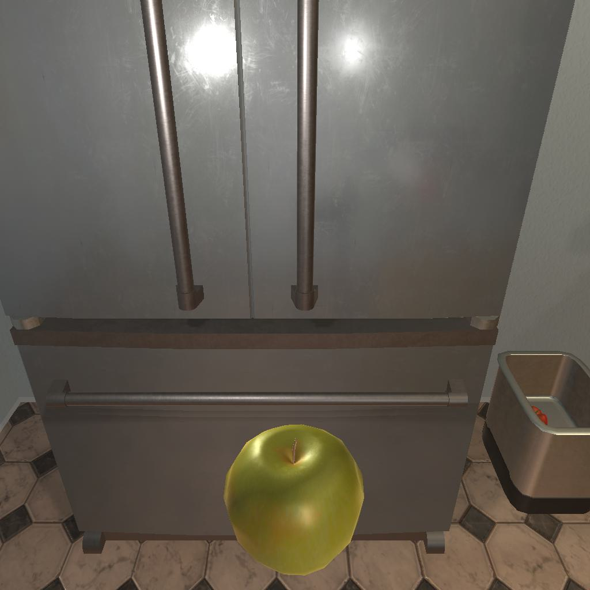

---------------------------------------------------------task: 20---------------------------------------------------------
--------------------------------------------------------------------------------------------------------------------------------------------------------------------
--------------------------------------------------------------------------------------------------------------------------------------------------------------------
Step:--------------------------------------------------------------------------8-------------------------------------------------------------------------------
----------------------------------------
VLM Prompt:
Image1:
**Instruction**
1. Analyze the provided image to identify all visible household objects, focusing on those relevant to the task description "put a hot apple in garbagecan."
2. Use the analysis of the image and the task hint "The agent must find an object of the desired type, pick it up, go to a microwave, heat the object with the microwave, then find the correct location to place it, and put it down there. The agent does not need to use the microwave button or open the microwave to heat the object, and the agent just needs to do action that is "heat the object with the microwave"." to answer the question: what is the most reasonable action in the choices for the task description "put a hot apple in garbagecan"?
4. Decide and write the answer using the template: The answer is: (i): , where i is the real number. If there is no desired object in the image, search every place based on **Initial Observation** to find the object. And if no one is exactly correct, choose a similar answer.
**Initial Observation**
You are in the middle of a room. Looking quickly around you, you can see cabinet (1-18), countertop (1-4), sink (1), drawer (1-7), sinkbasin (1), coffeemachine (1), microwave (1), garbagecan (1), stoveburner (1-4), toaster (1), fridge (1)
**Answer Choices**
(1): go to cabinet 1
(2): go to cabinet 2
(3): go to cabinet 3
(4): go to cabinet 4
(5): go to cabinet 5
(6): go to sink 1
(7): go to cabinet 6
(8): go to drawer 1
(9): go to drawer 2
(10): go to sinkbasin 1
(11): go to cabinet 7
(12): go to cabinet 8
(13): go to coffeemachine 1
(14): go to microwave 1
(15): go to cabinet 9
(16): go to countertop 2
(17): go to cabinet 10
(18): go to drawer 3
(19): go to drawer 4
(20): go to drawer 5
(21): go to cabinet 11
(22): go to cabinet 12
(23): go to cabinet 13
(24): go to cabinet 14
(25): go to stoveburner 1
(26): go to countertop 3
(27): go to stoveburner 2
(28): go to stoveburner 3
(29): go to stoveburner 4
(30): go to drawer 6
(31): go to cabinet 15
(32): go to cabinet 16
(33): go to cabinet 17
(34): go to cabinet 18
(35): go to toaster 1
(36): go to drawer 7
(37): go to countertop 4
(38): go to fridge 1
(39): put apple 2 in/on garbagecan 1
(40): examine apple 2
(41): examine garbagecan 1
**Answer**
Let's think step by step by following the instructions.
----------------------------------------
----------------------------------------
Original Response:
The task description is "put a hot apple in garbagecan." According to the task hint, the agent must find an apple, heat it in the microwave, and then put it in the garbage can. In the image provided, we can see an apple and a garbage can. The visible household objects relevant to the task are the microwave (not visible in the image but mentioned in the initial observation) and the garbage can.
Since the image shows an apple on the countertop, there is no need to search for it in cabinets or drawers. The agent does not need to use the microwave button or open the microwave to heat the object; they just need to perform the action "heat the object with the microwave." After heating the apple, the agent must put the hot apple in the garbage can.
The most reasonable action from the choices provided for the task description "put a hot apple in garbagecan" is to first heat the apple and then put it in the garbagecan. Since the action of heating the apple with the microwave is not explicitly listed as an option, the closest action we can choose is to put the apple in the garbage can after it is assumed to be heated.
The answer is: (39): put apple 2 in/on garbagecan 1
----------------------------------------
----------------------------------------
>>> Refine Original VLM Response and Get Pure Action: put apple 2 in/on garbagecan 1
----------------------------------------
-----------------------------------------------------------------
Running time: 8.387478828430176 seconds
Total Money: 6.97416
-----------------------------------------------------------------
-----------------------------------------------------------------
Text Observation:You put the apple 2 in/on the garbagecan 1.
-----------------------------------------------------------------
UNSUCCEED